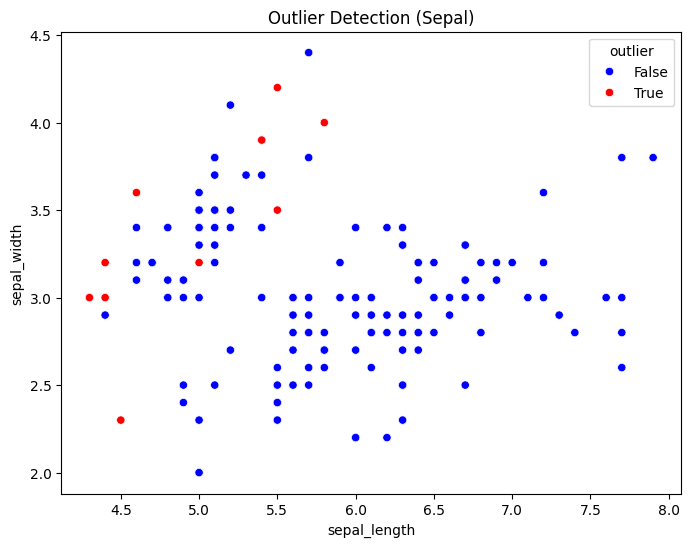
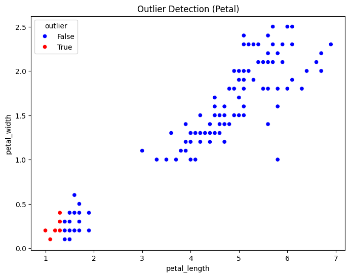

TUGAS 2#
penjelasan outlier deteksi#
Deteksi Outlier dengan K-Nearest Neighbors (KNN) dalam Data Understanding#
1. apa itu outlier deteksi?#
Outlier detection atau deteksi outlier adalah proses mengidentifikasi data yang memiliki nilai yang sangat berbeda dari mayoritas data lainnya dalam suatu dataset. Outlier sering kali disebabkan oleh kesalahan pengukuran, anomali sistem, atau memang fenomena yang jarang terjadi.
2. mengapa KNN bisa digunakan untuk deteksi outlier?#
K-Nearest Neighbors (KNN) bisa digunakan untuk deteksi outlier karena metode ini mengukur jarak antara titik data satu dengan yang lain. Outlier biasanya memiliki jarak yang jauh dari tetangga terdekatnya dibandingkan dengan titik data normal yang berada dalam kelompok yang lebih padat.
3. Langkah-Langkah Deteksi Outlier dengan KNN#
Menghitung Jarak ke K Tetangga Terdekat Untuk setiap titik data, KNN menghitung jarak ke sejumlah K tetangga terdekatnya.
Menentukan Skor Outlier Jika suatu titik memiliki jarak rata-rata ke K tetangga terdekat yang jauh lebih besar dibandingkan titik lainnya, maka titik tersebut kemungkinan adalah outlier.
Menentukan Threshold Setelah mendapatkan skor jarak untuk setiap titik, kita dapat menetapkan threshold untuk mendeteksi outlier. Misalnya, jika jarak rata-rata ke tetangga melebihi batas tertentu, maka titik tersebut dianggap outlier.
4. Kelebihan dan Kekurangan Metode KNN untuk Deteksi Outlier#
***1. Kelebihan KNN untuk Deteksi Outlier Non-parametrik ***
KNN tidak mengasumsikan distribusi tertentu dari data, sehingga cocok untuk berbagai jenis dataset. Dapat digunakan untuk data dengan berbagai dimensi
Cocok untuk data berdimensi tinggi maupun rendah. Mudah diimplementasikan
Algoritma KNN cukup sederhana dan dapat dengan mudah diterapkan menggunakan pustaka seperti scikit-learn. Fleksibel terhadap berbagai jenis data
Bisa digunakan untuk data numerik, kategorikal, atau gabungan keduanya. Cocok untuk dataset dengan pola klaster
KNN dapat dengan baik mengidentifikasi outlier yang jauh dari klaster utama data.
2. Kekurangan KNN untuk Deteksi Outlier
Biaya komputasi tinggi
Untuk dataset besar, menghitung jarak ke setiap titik data lainnya bisa sangat mahal dan lambat. Sulit memilih nilai K yang optimal
Jika K terlalu kecil, algoritma bisa menjadi terlalu sensitif terhadap noise. Jika K terlalu besar, bisa gagal mendeteksi beberapa outlier. Kurang efektif jika distribusi outlier tidak jelas
Jika outlier tidak memiliki jarak yang signifikan dari data lain, metode ini bisa gagal mengenalinya. Tergantung pada metrik jarak yang digunakan
Kinerja KNN dapat bervariasi tergantung pada apakah menggunakan Euclidean, Manhattan, atau metrik lainnya. Kurang efisien pada data berdimensi tinggi
Dalam dimensi yang sangat tinggi (curse of dimensionality), perhitungan jarak menjadi kurang berarti karena semua titik tampak hampir sama jauhnya.
5. Kesimpulan#
Metode K-Nearest Neighbors (KNN) untuk deteksi outlier bekerja dengan mengukur jarak suatu titik data terhadap tetangga terdekatnya. Jika jarak tersebut jauh dibandingkan dengan data lain, maka titik tersebut dianggap sebagai outlier.
✅ Kelebihan KNN untuk deteksi outlier adalah fleksibilitasnya terhadap berbagai jenis data, tidak memerlukan asumsi distribusi, serta kemampuannya dalam mengidentifikasi outlier di dataset dengan pola klaster.
❌ Kekurangannya meliputi biaya komputasi yang tinggi, kesulitan dalam memilih nilai K yang optimal, serta keterbatasan dalam menangani data berdimensi tinggi atau dataset dengan distribusi outlier yang tidak jelas.
Secara keseluruhan, KNN merupakan metode yang baik untuk deteksi outlier dalam dataset yang relatif kecil hingga menengah dengan pola klaster yang jelas. Namun, untuk dataset besar atau berdimensi tinggi, metode lain seperti Isolation Forest atau DBSCAN
%pip install pymysql
%pip install psycopg2
Requirement already satisfied: pymysql in /usr/local/python/3.12.1/lib/python3.12/site-packages (1.1.1)
[notice] A new release of pip is available: 24.3.1 -> 25.0.1
[notice] To update, run: python3 -m pip install --upgrade pip
Note: you may need to restart the kernel to use updated packages.
Requirement already satisfied: psycopg2 in /usr/local/python/3.12.1/lib/python3.12/site-packages (2.9.10)
[notice] A new release of pip is available: 24.3.1 -> 25.0.1
[notice] To update, run: python3 -m pip install --upgrade pip
Note: you may need to restart the kernel to use updated packages.
import psycopg2
import pymysql
import numpy as np
import pandas as pd
import seaborn as sns
import matplotlib.pyplot as plt
from scipy.spatial.distance import euclidean
def get_pg_data():
conn = psycopg2.connect(
host="pg-1c79828e-posgressqlpendata.i.aivencloud.com",
user="avnadmin",
password="AVNS_lNd8P_-IyQzpcnKg3Ye",
database="defaultdb",
port=14572
)
cursor = conn.cursor()
cursor.execute("SELECT * FROM bunga")
data = cursor.fetchall()
columns = [desc[0] for desc in cursor.description]
cursor.close()
conn.close()
return pd.DataFrame(data, columns=columns)
def get_mysql_data():
conn = pymysql.connect(
host="mysql-3f95b8aa-mysqll.g.aivencloud.com",
user="avnadmin",
password="AVNS_DYTBfDjLFuF2XVSXIqF",
database="flowers_mysql",
port=12288
)
cursor = conn.cursor()
cursor.execute("SELECT * FROM flowermysql")
data = cursor.fetchall()
columns = [desc[0] for desc in cursor.description]
cursor.close()
conn.close()
return pd.DataFrame(data, columns=columns)
# Ambil data dari kedua database
df_postgresql = get_pg_data()
df_mysql = get_mysql_data()
# Gabungkan berdasarkan kolom 'id' dan 'Class'
df_merged = pd.merge(df_mysql, df_postgresql, on=["id", "class"], how="inner")
# Ambil data fitur numerik
feature_columns = ["petal_length", "petal_width", "sepal_length", "sepal_width"]
data_values = df_merged[feature_columns].values
# Ambil referensi dari baris terakhir (baris ke-152 jika dihitung dari 1, atau index -1)
reference_point = data_values[-1]
def compute_distances(data, reference):
return np.array([euclidean(row, reference) for row in data])
# Hitung jarak Euclidean dari setiap baris ke referensi
df_merged["distance"] = compute_distances(data_values, reference_point)
# Tentukan threshold outlier berdasarkan persentil ke-95 (bisa disesuaikan)
threshold = np.percentile(df_merged["distance"], 93.5)
df_merged["outlier"] = df_merged["distance"] > threshold
# Cetak hasil data dengan outlier
print(df_merged.to_string(index=False))
# Visualisasi scatter plot dengan warna berdasarkan outlier
plt.figure(figsize=(8, 6))
sns.scatterplot(
x=df_merged["sepal_length"], y=df_merged["sepal_width"],
hue=df_merged["outlier"], palette={False: "blue", True: "red"}
)
plt.title("Outlier Detection (Sepal)")
plt.show()
plt.figure(figsize=(8, 6))
sns.scatterplot(
x=df_merged["petal_length"], y=df_merged["petal_width"],
hue=df_merged["outlier"], palette={False: "blue", True: "red"}
)
plt.title("Outlier Detection (Petal)")
plt.show()
id class petal_length petal_width sepal_length sepal_width distance outlier
1 Iris-setosa 1.4 0.2 5.1 3.5 4.482187 False
2 Iris-setosa 1.4 0.2 4.9 3.0 4.481071 False
3 Iris-setosa 1.3 0.2 4.7 3.2 4.588028 False
4 Iris-setosa 1.5 0.2 4.6 3.1 4.403408 False
5 Iris-setosa 1.4 0.2 5.0 3.6 4.491102 False
6 Iris-setosa 1.7 0.4 5.4 3.9 4.213075 False
7 Iris-setosa 1.4 0.3 4.6 3.4 4.487761 False
8 Iris-setosa 1.5 0.2 5.0 3.4 4.379498 False
9 Iris-setosa 1.4 0.2 4.4 2.9 4.536518 False
10 Iris-setosa 1.5 0.1 4.9 3.1 4.398863 False
11 Iris-setosa 1.5 0.2 5.4 3.7 4.412482 False
12 Iris-setosa 1.6 0.2 4.8 3.4 4.290688 False
13 Iris-setosa 1.4 0.1 4.8 3.0 4.505552 False
14 Iris-setosa 1.1 0.1 4.3 3.0 4.855924 True
15 Iris-setosa 1.2 0.2 5.8 4.0 4.788528 True
16 Iris-setosa 1.5 0.4 5.7 4.4 4.544227 False
17 Iris-setosa 1.3 0.4 5.4 3.9 4.603260 True
18 Iris-setosa 1.4 0.3 5.1 3.5 4.465423 False
19 Iris-setosa 1.7 0.3 5.7 3.8 4.244997 False
20 Iris-setosa 1.5 0.3 5.1 3.8 4.397727 False
21 Iris-setosa 1.7 0.2 5.4 3.4 4.192851 False
22 Iris-setosa 1.5 0.4 5.1 3.7 4.370355 False
23 Iris-setosa 1.0 0.2 4.6 3.6 4.908156 True
24 Iris-setosa 1.7 0.5 5.1 3.3 4.131586 False
25 Iris-setosa 1.9 0.2 4.8 3.4 3.997499 False
26 Iris-setosa 1.6 0.2 5.0 3.0 4.281355 False
27 Iris-setosa 1.6 0.4 5.0 3.4 4.248529 False
28 Iris-setosa 1.5 0.2 5.2 3.5 4.385202 False
29 Iris-setosa 1.4 0.2 5.2 3.4 4.477723 False
30 Iris-setosa 1.6 0.2 4.7 3.2 4.294182 False
31 Iris-setosa 1.6 0.2 4.8 3.1 4.287190 False
32 Iris-setosa 1.5 0.4 5.4 3.4 4.356604 False
33 Iris-setosa 1.5 0.1 5.2 4.1 4.485532 False
34 Iris-setosa 1.4 0.2 5.5 4.2 4.600000 True
35 Iris-setosa 1.5 0.1 4.9 3.1 4.398863 False
36 Iris-setosa 1.2 0.2 5.0 3.2 4.670118 True
37 Iris-setosa 1.3 0.2 5.5 3.5 4.597826 True
38 Iris-setosa 1.5 0.1 4.9 3.1 4.398863 False
39 Iris-setosa 1.3 0.2 4.4 3.0 4.628175 True
40 Iris-setosa 1.5 0.2 5.1 3.4 4.378356 False
41 Iris-setosa 1.3 0.3 5.0 3.5 4.565085 False
42 Iris-setosa 1.3 0.3 4.5 2.3 4.680812 True
43 Iris-setosa 1.3 0.2 4.4 3.2 4.623851 True
44 Iris-setosa 1.6 0.6 5.0 3.5 4.230839 False
45 Iris-setosa 1.9 0.4 5.1 3.8 3.991240 False
46 Iris-setosa 1.4 0.3 4.8 3.0 4.469899 False
47 Iris-setosa 1.6 0.2 5.1 3.8 4.317407 False
48 Iris-setosa 1.4 0.2 4.6 3.2 4.500000 False
49 Iris-setosa 1.5 0.2 5.3 3.7 4.406813 False
50 Iris-setosa 1.4 0.2 5.0 3.3 4.474371 False
51 Iris-versicolor 4.7 1.4 7.0 3.2 2.231591 False
52 Iris-versicolor 4.5 1.5 6.4 3.2 1.905256 False
53 Iris-versicolor 4.9 1.5 6.9 3.1 2.076054 False
54 Iris-versicolor 4.0 1.3 5.5 2.3 2.073644 False
55 Iris-versicolor 4.6 1.5 6.5 2.8 1.951922 False
56 Iris-versicolor 4.5 1.3 5.7 2.8 1.516575 False
57 Iris-versicolor 4.7 1.6 6.3 3.3 1.737815 False
58 Iris-versicolor 3.3 1.0 4.9 2.4 2.632489 False
59 Iris-versicolor 4.6 1.3 6.6 2.9 1.967232 False
60 Iris-versicolor 3.9 1.4 5.2 2.7 2.007486 False
61 Iris-versicolor 3.5 1.0 5.0 2.0 2.596151 False
62 Iris-versicolor 4.2 1.5 5.9 3.0 1.868154 False
63 Iris-versicolor 4.0 1.0 6.0 2.2 2.247221 False
64 Iris-versicolor 4.7 1.4 6.1 2.9 1.568439 False
65 Iris-versicolor 3.6 1.3 5.6 2.9 2.295648 False
66 Iris-versicolor 4.4 1.4 6.7 3.1 2.165641 False
67 Iris-versicolor 4.5 1.5 5.6 3.0 1.493318 False
68 Iris-versicolor 4.1 1.0 5.8 2.7 1.905256 False
69 Iris-versicolor 4.5 1.5 6.2 2.2 2.037155 False
70 Iris-versicolor 3.9 1.1 5.6 2.5 2.088061 False
71 Iris-versicolor 4.8 1.8 5.9 3.2 1.509967 False
72 Iris-versicolor 4.0 1.3 6.1 2.8 2.118962 False
73 Iris-versicolor 4.9 1.5 6.3 2.5 1.729162 False
74 Iris-versicolor 4.7 1.2 6.1 2.8 1.552417 False
75 Iris-versicolor 4.3 1.3 6.4 2.9 2.029778 False
76 Iris-versicolor 4.4 1.4 6.6 3.0 2.100000 False
77 Iris-versicolor 4.8 1.4 6.8 2.8 2.051828 False
78 Iris-versicolor 5.0 1.7 6.7 3.0 1.931321 False
79 Iris-versicolor 4.5 1.5 6.0 2.9 1.685230 False
80 Iris-versicolor 3.5 1.0 5.7 2.6 2.451530 False
81 Iris-versicolor 3.8 1.1 5.5 2.4 2.193171 False
82 Iris-versicolor 3.7 1.0 5.5 2.4 2.282542 False
83 Iris-versicolor 3.9 1.2 5.8 2.7 2.095233 False
84 Iris-versicolor 5.1 1.6 6.0 2.7 1.382027 False
85 Iris-versicolor 4.5 1.5 5.4 3.0 1.438749 False
86 Iris-versicolor 4.5 1.6 6.0 3.4 1.702939 False
87 Iris-versicolor 4.7 1.5 6.7 3.1 2.007486 False
88 Iris-versicolor 4.4 1.3 6.3 2.3 2.073644 False
89 Iris-versicolor 4.1 1.3 5.6 3.0 1.808314 False
90 Iris-versicolor 4.0 1.3 5.5 2.5 1.994994 False
91 Iris-versicolor 4.4 1.2 5.5 2.6 1.587451 False
92 Iris-versicolor 4.6 1.4 6.1 3.0 1.624808 False
93 Iris-versicolor 4.0 1.2 5.8 2.6 2.032240 False
94 Iris-versicolor 3.3 1.0 5.0 2.3 2.658947 False
95 Iris-versicolor 4.2 1.3 5.6 2.7 1.774824 False
96 Iris-versicolor 4.2 1.2 5.7 3.0 1.732051 False
97 Iris-versicolor 4.2 1.3 5.7 2.9 1.760682 False
98 Iris-versicolor 4.3 1.3 6.2 2.9 1.907878 False
99 Iris-versicolor 3.0 1.1 5.1 2.5 2.887906 False
100 Iris-versicolor 4.1 1.3 5.7 2.8 1.870829 False
101 Iris-virginica 6.0 2.5 6.3 3.3 1.933908 False
102 Iris-virginica 5.1 1.9 5.8 2.7 1.428286 False
103 Iris-virginica 5.9 2.1 7.1 3.0 2.293469 False
104 Iris-virginica 5.6 1.8 6.3 2.9 1.486607 False
105 Iris-virginica 5.8 2.2 6.5 3.0 1.854724 False
106 Iris-virginica 6.6 2.1 7.6 3.0 2.853069 False
107 Iris-virginica 4.5 1.7 4.9 2.5 1.646208 False
108 Iris-virginica 6.3 1.8 7.3 2.9 2.412468 False
109 Iris-virginica 5.8 1.8 6.7 2.5 1.920937 False
110 Iris-virginica 6.1 2.5 7.2 3.6 2.628688 False
111 Iris-virginica 5.1 2.0 6.5 3.2 1.857418 False
112 Iris-virginica 5.3 1.9 6.4 2.7 1.732051 False
113 Iris-virginica 5.5 2.1 6.8 3.0 2.056696 False
114 Iris-virginica 5.0 2.0 5.7 2.5 1.577973 False
115 Iris-virginica 5.1 2.4 5.8 2.8 1.760682 False
116 Iris-virginica 5.3 2.3 6.4 3.2 1.905256 False
117 Iris-virginica 5.5 1.8 6.5 3.0 1.652271 False
118 Iris-virginica 6.7 2.2 7.7 3.8 3.061046 False
119 Iris-virginica 6.9 2.3 7.7 2.6 3.165438 False
120 Iris-virginica 5.0 1.5 6.0 2.2 1.643168 False
121 Iris-virginica 5.7 2.3 6.9 3.2 2.222611 False
122 Iris-virginica 4.9 2.0 5.6 2.8 1.489966 False
123 Iris-virginica 6.7 2.0 7.7 2.8 2.954657 False
124 Iris-virginica 4.9 1.8 6.3 2.7 1.772005 False
125 Iris-virginica 5.7 2.1 6.7 3.3 1.946792 False
126 Iris-virginica 6.0 1.8 7.2 3.2 2.256103 False
127 Iris-virginica 4.8 1.8 6.2 2.8 1.734935 False
128 Iris-virginica 4.9 1.8 6.1 3.0 1.577973 False
129 Iris-virginica 5.6 2.1 6.4 2.8 1.760682 False
130 Iris-virginica 5.8 1.6 7.2 3.0 2.193171 False
131 Iris-virginica 6.1 1.9 7.4 2.8 2.519921 False
132 Iris-virginica 6.4 2.0 7.9 3.8 3.091925 False
133 Iris-virginica 5.6 2.2 6.4 2.8 1.824829 False
134 Iris-virginica 5.1 1.5 6.3 2.8 1.529706 False
135 Iris-virginica 5.6 1.4 6.1 2.6 1.249000 False
136 Iris-virginica 6.1 2.3 7.7 3.0 2.929164 False
137 Iris-virginica 5.6 2.4 6.3 3.4 1.865476 False
138 Iris-virginica 5.5 1.8 6.4 3.1 1.558846 False
139 Iris-virginica 4.8 1.8 6.0 3.0 1.577973 False
140 Iris-virginica 5.4 2.1 6.9 3.1 2.149419 False
141 Iris-virginica 5.6 2.4 6.7 3.1 2.137756 False
142 Iris-virginica 5.1 2.3 6.9 3.1 2.330236 False
143 Iris-virginica 5.1 1.9 5.8 2.7 1.428286 False
144 Iris-virginica 5.9 2.3 6.8 3.2 2.142429 False
145 Iris-virginica 5.7 2.5 6.7 3.3 2.197726 False
146 Iris-virginica 5.2 2.3 6.7 3.0 2.156386 False
147 Iris-virginica 5.0 1.9 6.3 2.5 1.838478 False
148 Iris-virginica 5.2 2.0 6.5 3.0 1.833030 False
149 Iris-virginica 5.4 2.3 6.2 3.4 1.760682 False
150 Iris-virginica 5.1 1.8 5.9 3.0 1.345362 False
151 ???? 5.8 1.0 5.1 3.2 0.000000 False


# Hitung total outlier
total_outliers = df_merged["outlier"].sum()
print(f"Total Outlier: {total_outliers}")
Total Outlier: 10
# Urutkan data berdasarkan jarak dari terkecil ke terbesar
df_sorted = df_merged.sort_values(by="distance", ascending=True)
# Tampilkan hasilnya
print(df_sorted.to_string(index=False))
id class petal_length petal_width sepal_length sepal_width distance outlier
151 ???? 5.8 1.0 5.1 3.2 0.000000 False
135 Iris-virginica 5.6 1.4 6.1 2.6 1.249000 False
150 Iris-virginica 5.1 1.8 5.9 3.0 1.345362 False
84 Iris-versicolor 5.1 1.6 6.0 2.7 1.382027 False
143 Iris-virginica 5.1 1.9 5.8 2.7 1.428286 False
102 Iris-virginica 5.1 1.9 5.8 2.7 1.428286 False
85 Iris-versicolor 4.5 1.5 5.4 3.0 1.438749 False
104 Iris-virginica 5.6 1.8 6.3 2.9 1.486607 False
122 Iris-virginica 4.9 2.0 5.6 2.8 1.489966 False
67 Iris-versicolor 4.5 1.5 5.6 3.0 1.493318 False
71 Iris-versicolor 4.8 1.8 5.9 3.2 1.509967 False
56 Iris-versicolor 4.5 1.3 5.7 2.8 1.516575 False
134 Iris-virginica 5.1 1.5 6.3 2.8 1.529706 False
74 Iris-versicolor 4.7 1.2 6.1 2.8 1.552417 False
138 Iris-virginica 5.5 1.8 6.4 3.1 1.558846 False
64 Iris-versicolor 4.7 1.4 6.1 2.9 1.568439 False
128 Iris-virginica 4.9 1.8 6.1 3.0 1.577973 False
139 Iris-virginica 4.8 1.8 6.0 3.0 1.577973 False
114 Iris-virginica 5.0 2.0 5.7 2.5 1.577973 False
91 Iris-versicolor 4.4 1.2 5.5 2.6 1.587451 False
92 Iris-versicolor 4.6 1.4 6.1 3.0 1.624808 False
120 Iris-virginica 5.0 1.5 6.0 2.2 1.643168 False
107 Iris-virginica 4.5 1.7 4.9 2.5 1.646208 False
117 Iris-virginica 5.5 1.8 6.5 3.0 1.652271 False
79 Iris-versicolor 4.5 1.5 6.0 2.9 1.685230 False
86 Iris-versicolor 4.5 1.6 6.0 3.4 1.702939 False
73 Iris-versicolor 4.9 1.5 6.3 2.5 1.729162 False
96 Iris-versicolor 4.2 1.2 5.7 3.0 1.732051 False
112 Iris-virginica 5.3 1.9 6.4 2.7 1.732051 False
127 Iris-virginica 4.8 1.8 6.2 2.8 1.734935 False
57 Iris-versicolor 4.7 1.6 6.3 3.3 1.737815 False
97 Iris-versicolor 4.2 1.3 5.7 2.9 1.760682 False
149 Iris-virginica 5.4 2.3 6.2 3.4 1.760682 False
115 Iris-virginica 5.1 2.4 5.8 2.8 1.760682 False
129 Iris-virginica 5.6 2.1 6.4 2.8 1.760682 False
124 Iris-virginica 4.9 1.8 6.3 2.7 1.772005 False
95 Iris-versicolor 4.2 1.3 5.6 2.7 1.774824 False
89 Iris-versicolor 4.1 1.3 5.6 3.0 1.808314 False
133 Iris-virginica 5.6 2.2 6.4 2.8 1.824829 False
148 Iris-virginica 5.2 2.0 6.5 3.0 1.833030 False
147 Iris-virginica 5.0 1.9 6.3 2.5 1.838478 False
105 Iris-virginica 5.8 2.2 6.5 3.0 1.854724 False
111 Iris-virginica 5.1 2.0 6.5 3.2 1.857418 False
137 Iris-virginica 5.6 2.4 6.3 3.4 1.865476 False
62 Iris-versicolor 4.2 1.5 5.9 3.0 1.868154 False
100 Iris-versicolor 4.1 1.3 5.7 2.8 1.870829 False
68 Iris-versicolor 4.1 1.0 5.8 2.7 1.905256 False
52 Iris-versicolor 4.5 1.5 6.4 3.2 1.905256 False
116 Iris-virginica 5.3 2.3 6.4 3.2 1.905256 False
98 Iris-versicolor 4.3 1.3 6.2 2.9 1.907878 False
109 Iris-virginica 5.8 1.8 6.7 2.5 1.920937 False
78 Iris-versicolor 5.0 1.7 6.7 3.0 1.931321 False
101 Iris-virginica 6.0 2.5 6.3 3.3 1.933908 False
125 Iris-virginica 5.7 2.1 6.7 3.3 1.946792 False
55 Iris-versicolor 4.6 1.5 6.5 2.8 1.951922 False
59 Iris-versicolor 4.6 1.3 6.6 2.9 1.967232 False
90 Iris-versicolor 4.0 1.3 5.5 2.5 1.994994 False
60 Iris-versicolor 3.9 1.4 5.2 2.7 2.007486 False
87 Iris-versicolor 4.7 1.5 6.7 3.1 2.007486 False
75 Iris-versicolor 4.3 1.3 6.4 2.9 2.029778 False
93 Iris-versicolor 4.0 1.2 5.8 2.6 2.032240 False
69 Iris-versicolor 4.5 1.5 6.2 2.2 2.037155 False
77 Iris-versicolor 4.8 1.4 6.8 2.8 2.051828 False
113 Iris-virginica 5.5 2.1 6.8 3.0 2.056696 False
88 Iris-versicolor 4.4 1.3 6.3 2.3 2.073644 False
54 Iris-versicolor 4.0 1.3 5.5 2.3 2.073644 False
53 Iris-versicolor 4.9 1.5 6.9 3.1 2.076054 False
70 Iris-versicolor 3.9 1.1 5.6 2.5 2.088061 False
83 Iris-versicolor 3.9 1.2 5.8 2.7 2.095233 False
76 Iris-versicolor 4.4 1.4 6.6 3.0 2.100000 False
72 Iris-versicolor 4.0 1.3 6.1 2.8 2.118962 False
141 Iris-virginica 5.6 2.4 6.7 3.1 2.137756 False
144 Iris-virginica 5.9 2.3 6.8 3.2 2.142429 False
140 Iris-virginica 5.4 2.1 6.9 3.1 2.149419 False
146 Iris-virginica 5.2 2.3 6.7 3.0 2.156386 False
66 Iris-versicolor 4.4 1.4 6.7 3.1 2.165641 False
81 Iris-versicolor 3.8 1.1 5.5 2.4 2.193171 False
130 Iris-virginica 5.8 1.6 7.2 3.0 2.193171 False
145 Iris-virginica 5.7 2.5 6.7 3.3 2.197726 False
121 Iris-virginica 5.7 2.3 6.9 3.2 2.222611 False
51 Iris-versicolor 4.7 1.4 7.0 3.2 2.231591 False
63 Iris-versicolor 4.0 1.0 6.0 2.2 2.247221 False
126 Iris-virginica 6.0 1.8 7.2 3.2 2.256103 False
82 Iris-versicolor 3.7 1.0 5.5 2.4 2.282542 False
103 Iris-virginica 5.9 2.1 7.1 3.0 2.293469 False
65 Iris-versicolor 3.6 1.3 5.6 2.9 2.295648 False
142 Iris-virginica 5.1 2.3 6.9 3.1 2.330236 False
108 Iris-virginica 6.3 1.8 7.3 2.9 2.412468 False
80 Iris-versicolor 3.5 1.0 5.7 2.6 2.451530 False
131 Iris-virginica 6.1 1.9 7.4 2.8 2.519921 False
61 Iris-versicolor 3.5 1.0 5.0 2.0 2.596151 False
110 Iris-virginica 6.1 2.5 7.2 3.6 2.628688 False
58 Iris-versicolor 3.3 1.0 4.9 2.4 2.632489 False
94 Iris-versicolor 3.3 1.0 5.0 2.3 2.658947 False
106 Iris-virginica 6.6 2.1 7.6 3.0 2.853069 False
99 Iris-versicolor 3.0 1.1 5.1 2.5 2.887906 False
136 Iris-virginica 6.1 2.3 7.7 3.0 2.929164 False
123 Iris-virginica 6.7 2.0 7.7 2.8 2.954657 False
118 Iris-virginica 6.7 2.2 7.7 3.8 3.061046 False
132 Iris-virginica 6.4 2.0 7.9 3.8 3.091925 False
119 Iris-virginica 6.9 2.3 7.7 2.6 3.165438 False
45 Iris-setosa 1.9 0.4 5.1 3.8 3.991240 False
25 Iris-setosa 1.9 0.2 4.8 3.4 3.997499 False
24 Iris-setosa 1.7 0.5 5.1 3.3 4.131586 False
21 Iris-setosa 1.7 0.2 5.4 3.4 4.192851 False
6 Iris-setosa 1.7 0.4 5.4 3.9 4.213075 False
44 Iris-setosa 1.6 0.6 5.0 3.5 4.230839 False
19 Iris-setosa 1.7 0.3 5.7 3.8 4.244997 False
27 Iris-setosa 1.6 0.4 5.0 3.4 4.248529 False
26 Iris-setosa 1.6 0.2 5.0 3.0 4.281355 False
31 Iris-setosa 1.6 0.2 4.8 3.1 4.287190 False
12 Iris-setosa 1.6 0.2 4.8 3.4 4.290688 False
30 Iris-setosa 1.6 0.2 4.7 3.2 4.294182 False
47 Iris-setosa 1.6 0.2 5.1 3.8 4.317407 False
32 Iris-setosa 1.5 0.4 5.4 3.4 4.356604 False
22 Iris-setosa 1.5 0.4 5.1 3.7 4.370355 False
40 Iris-setosa 1.5 0.2 5.1 3.4 4.378356 False
8 Iris-setosa 1.5 0.2 5.0 3.4 4.379498 False
28 Iris-setosa 1.5 0.2 5.2 3.5 4.385202 False
20 Iris-setosa 1.5 0.3 5.1 3.8 4.397727 False
10 Iris-setosa 1.5 0.1 4.9 3.1 4.398863 False
38 Iris-setosa 1.5 0.1 4.9 3.1 4.398863 False
35 Iris-setosa 1.5 0.1 4.9 3.1 4.398863 False
4 Iris-setosa 1.5 0.2 4.6 3.1 4.403408 False
49 Iris-setosa 1.5 0.2 5.3 3.7 4.406813 False
11 Iris-setosa 1.5 0.2 5.4 3.7 4.412482 False
18 Iris-setosa 1.4 0.3 5.1 3.5 4.465423 False
46 Iris-setosa 1.4 0.3 4.8 3.0 4.469899 False
50 Iris-setosa 1.4 0.2 5.0 3.3 4.474371 False
29 Iris-setosa 1.4 0.2 5.2 3.4 4.477723 False
2 Iris-setosa 1.4 0.2 4.9 3.0 4.481071 False
1 Iris-setosa 1.4 0.2 5.1 3.5 4.482187 False
33 Iris-setosa 1.5 0.1 5.2 4.1 4.485532 False
7 Iris-setosa 1.4 0.3 4.6 3.4 4.487761 False
5 Iris-setosa 1.4 0.2 5.0 3.6 4.491102 False
48 Iris-setosa 1.4 0.2 4.6 3.2 4.500000 False
13 Iris-setosa 1.4 0.1 4.8 3.0 4.505552 False
9 Iris-setosa 1.4 0.2 4.4 2.9 4.536518 False
16 Iris-setosa 1.5 0.4 5.7 4.4 4.544227 False
41 Iris-setosa 1.3 0.3 5.0 3.5 4.565085 False
3 Iris-setosa 1.3 0.2 4.7 3.2 4.588028 False
37 Iris-setosa 1.3 0.2 5.5 3.5 4.597826 True
34 Iris-setosa 1.4 0.2 5.5 4.2 4.600000 True
17 Iris-setosa 1.3 0.4 5.4 3.9 4.603260 True
43 Iris-setosa 1.3 0.2 4.4 3.2 4.623851 True
39 Iris-setosa 1.3 0.2 4.4 3.0 4.628175 True
36 Iris-setosa 1.2 0.2 5.0 3.2 4.670118 True
42 Iris-setosa 1.3 0.3 4.5 2.3 4.680812 True
15 Iris-setosa 1.2 0.2 5.8 4.0 4.788528 True
14 Iris-setosa 1.1 0.1 4.3 3.0 4.855924 True
23 Iris-setosa 1.0 0.2 4.6 3.6 4.908156 True